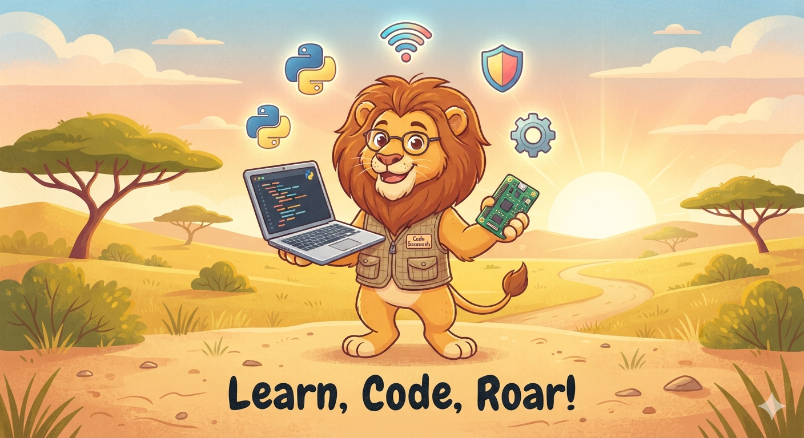

🌍 Grade 8
Technology & Computing Science
⚡ Think · Code · Connect · Create ⚡

Unit 1 Thinking Like a Computer Scientist
- Introduction to This Book
- Chapter 1: What is Computational Thinking?
- Chapter 2: Decomposition — Breaking Down Complex Problems
- Chapter 3: Pattern Recognition — Finding Similarities and Rules
- Chapter 4: Abstraction — Creating Models to Simplify
- Chapter 5: Algorithm Design — Step-by-Step Instructions
- Chapter 6: Case Study — Lining Up by Height
- Chapter 7: Case Study — Arranging Shirts
- Chapter 8: Testing and Improving Algorithms
- Chapter 9: Combining the Four Pillars
- Chapter 10: Your Project
- Unit 1 Review
Unit 2 Logic and Functions in Programming
- Introduction to This Unit
- Chapter 1: Boolean Logic
- Chapter 2: Boolean Operators
- Chapter 3: Introduction to Functions
- Chapter 4: Functions with Logic
- Chapter 5: Designing Algorithms with Logic and Functions
- Chapter 6: The Grade Calculator Program
- Chapter 7: Multi-Variable Inequalities
- Chapter 8: Testing and Debugging
- Chapter 9: Combining Logic and Functions
- Chapter 10: Your Project
- Unit 2 Review
Unit 3 Computer Systems and Communication Technology
- Introduction to This Unit
- Chapter 1: What is a Computer System?
- Chapter 2: Inside the Computer
- Chapter 3: How a Computer Works
- Chapter 4: Software
- Chapter 5: Operating Systems
- Chapter 6: Communication Technology
- Chapter 7: Networks
- Chapter 8: The Internet and the World Wide Web
- Chapter 9: Wireless Communication Technology
- Chapter 10: Designing a Complete System
- Unit 3 Review
Unit 4 Safe, Responsible, and Rights-Aware IT Use
- Introduction to This Unit
- Chapter 1: From Safe Use to Responsible Use
- Chapter 2: Responding to Inappropriate Content
- Chapter 3: Responsible Sharing and the Impact of Publishing
- Chapter 4: Managing Your Digital Footprint
- Chapter 5: Copyright and Ownership of Your Work
- Chapter 6: Setting Usage Rights for Your Work
- Chapter 7: Protecting Your Digital Creations
- Chapter 8: Reporting and Platform Tools
- Chapter 9: Responsible Digital Presence as a Creator
- Chapter 10: Your Project — Create, License, and Protect
- Unit 4 Review